Pasporty slovenských měst: bez pasportu (nahoře, modře) a s pasportem (dole, červeně)
Řez zleva (A) doprava (B), ±10 m podél ulice, 10 px = 1 m. Silné čáry = okraje vozovky, tenké = ostatní hranice, žlutá = střed řezu, * = odhad. Ortofoto © GKÚ Bratislava, NLC (ZBGIS, CC BY 4.0).
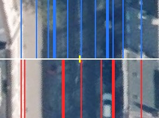
an1 · Van Breestraat (antwerpen)
bez pasportu: chodnik 2.6* · cyklostezka 2* · chodnik 0.95* · pruh 2.33 · pruh 2.33 · pruh 2.33 · parkovani 2 · chodnik 1* · cyklostezka 1.75* · chodnik 3.05*
s pasportem: nezname 0.55* · chodnik_kola 6.5 · pruh 3.17 · pruh 3.33 · parkovani 2 · chodnik_kola 4.8
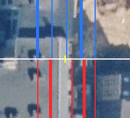
an2 · Prinsesstraat (antwerpen)
bez pasportu: pruh 2.57 · pruh 2.5 · parkovani 2.33 · chodnik 2.45*
s pasportem: chodnik 2.05 · pruh 3.75 · parkovani 2 · chodnik 1.9
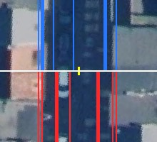
an4 · Spoorstraat (antwerpen)
bez pasportu: chodnik 0.5* · parkovani 1.55 · pruh 2.79 · tramvaj_v_pruhu 4.41 · chodnik 1.6*
s pasportem: nezname 0.5* · chodnik 2 · parkovani 1.85 · tramvaj_v_pruhu 3.95 · chodnik 2.1 · nezname 0.45*
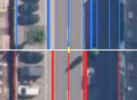
ge1 · Gasmeterlaan (gent)
bez pasportu: plocha 6.3* · pruh 4.07 · pruh 2.9 · krajnice 1.63 · chodnik 1.2* · cyklostezka 2.5* · chodnik 2*
s pasportem: chodnik 7.45 · pruh 3.22 · pruh 2.9 · krajnice 0.48 · chodnik_kola 6.7
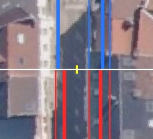
ge2 · Begijnengracht (gent)
bez pasportu: pruh 4.47 · parkovani 1.93* · chodnik 1.15*
s pasportem: chodnik 1.25 · pruh 3.52 · parkovani 1.63 · chodnik 1.45
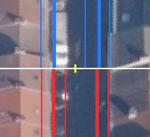
ge4 · Zonder-Naamstraat (gent)
bez pasportu: chodnik 1.85* · pruh 4.6 · parkovani 2* · chodnik 1.6*
s pasportem: chodnik 1.65 · parkovani 1.85 · pruh 4.6 · chodnik 1.7
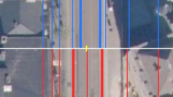
ge5 · Limburgstraat (gent)
bez pasportu: plocha 1.89* · stromorad 1.5 · plocha 2.76* · chodnik 1.6* · tramvaj_v_pruhu 4 · plocha 1.2* · chodnik 4.8* · plocha 5.95*
s pasportem: chodnik 1.89 · stromorad 1.5 · chodnik 2.81 · tramvaj_v_pruhu 2.97 · tramvaj_v_pruhu 2.97 · chodnik 5.15 · nezname 6.4*
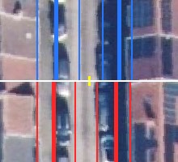
br1 · Wagnerstraat (brugge)
bez pasportu: chodnik 2.25* · pruh 2.9 · pruh 2.9 · parkovani 2* · chodnik 1.65*
s pasportem: chodnik 2 · pruh 2.67 · pruh 2.67 · parkovani 2.3 · chodnik 1.85
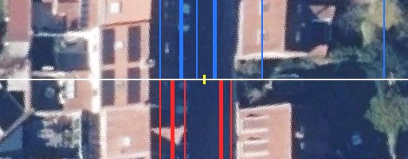
br2 · Willemijnendreef (brugge)
bez pasportu: chodnik 2.6* · parkovani 2 · pruh 2.2 · chodnik 6* · plocha 15.3*
s pasportem: chodnik 1.5 · parkovani 1.65 · pruh 4.5 · chodnik 1.25
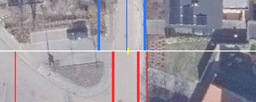
le1 · Kapellelaan (leuven)
bez pasportu: pruh 5.5 · pruh 3.5
s pasportem: chodnik 19.1 · pruh 4.85 · chodnik 1.85
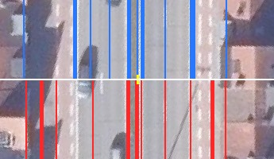
le2 · Tervuursevest (leuven)
bez pasportu: chodnik 6.35* · parkovani 2 · pruh 2.42 · pruh 2.42 · zelen 1.15* · plocha 0.6* · pruh 2.87 · pruh 3.2 · krajnice 0.33 · chodnik 4.1*
s pasportem: chodnik 1.95 · parkovani 1.92 · pruh 4.53 · pruh 4.45 · delici 1.1 · krajnice 0.62 · pruh 3 · pruh 3.2 · krajnice 2.68 · chodnik 1.7
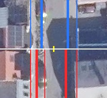
le3 · Ierse-Predikherenstraat (leuven)
bez pasportu: chodnik 2.2* · pruh 5.4 · chodnik 1.9*
s pasportem: chodnik 1.25 · parkovani 1.7 · pruh 4.25 · chodnik 2.3
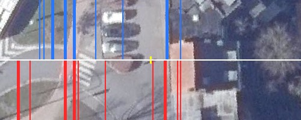
le4 · Redingenstraat (leuven)
bez pasportu: plocha 0.63* · stromorad 1.39 · krajnice 2.13* · cyklostezka 1.5 · krajnice 3.62* · pruh 4.5 · krajnice 7.25* · chodnik 2.35*
s pasportem: parkovani 2* · krajnice 5.8* · cyklostezka 1.5 · krajnice 0.67* · pruh 4.5 · krajnice 7.96* · parkovani 2* · chodnik 2.1 · nezname 0.5*
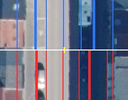
me1 · Brusselsesteenweg (mechelen)
bez pasportu: chodnik 3.55* · parkovani 2.2* · pruh 3.45 · pruh 3.45 · parkovani 2.5* · chodnik 3.8*
s pasportem: chodnik 3.8 · parkovani 2 · pruh 3.25 · pruh 3.25 · parkovani 2 · chodnik 3.6 · nezname 1.05*
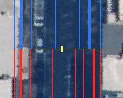
anx1 · Karel Rogierstraat (antwerpen)
bez pasportu: chodnik 1.35* · parkovani 2 · pruh 4.9 · pruh 4.9 · parkovani 2 · chodnik 2.2*
s pasportem: chodnik 1.2 · parkovani 2 · pruh 4.5 · pruh 4.5 · krajnice 1.75* · parkovani 2 · chodnik 1.4
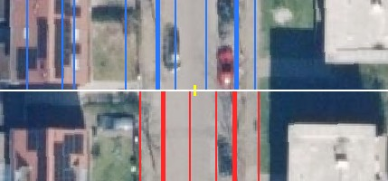
anx4 · Victor Hugostraat (antwerpen)
bez pasportu: zelen 3.95* · plocha 1.2* · zelen 5.8* · chodnik 3.4* · parkovani 2* · pruh 3.4 · pruh 3.4 · nezname 2.02*
s pasportem: chodnik 2.5 · pruh 2.97 · pruh 2.97 · parkovani 2* · chodnik 2.65
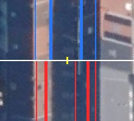
gex3 · Beukelaarstraat (gent)
bez pasportu: chodnik 2.5* · pruh 5 · chodnik 2.45*
s pasportem: chodnik 1.45 · pruh 4.9 · parkovani 2* · chodnik 1.35
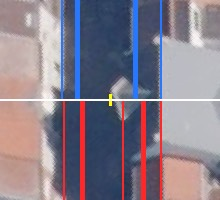
gex4 · Acaciastraat (gent)
bez pasportu: chodnik 1.5* · pruh 5.8 · chodnik 2.65*
s pasportem: chodnik 1.8 · pruh 4.1 · parkovani 2* · chodnik 1.85
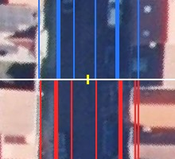
brx1 · Kardinaal Mercierstraat (brugge)
bez pasportu: chodnik 2.4* · parkovani 2 · pruh 2.7 · pruh 2.7 · chodnik 2.75*
s pasportem: chodnik 1.95 · parkovani 2 · pruh 3.02 · pruh 3.02 · chodnik 1.95 · nezname 0.4*
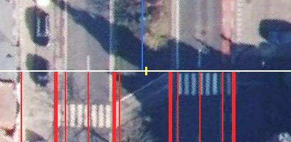
brx2 · Koningin Elisabethlaan (brugge)
bez pasportu:
s pasportem: chodnik 4.75* · cyklopruh 1.47 · pruh 3.2 · pruh 3.53 · plocha 0.85* · zelen 7.05* · krajnice 1.17 · pruh 3.1 · pruh 3.13 · cyklopruh 1.5
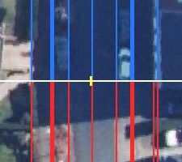
brx3 · Peter Benoitlaan (brugge)
bez pasportu: chodnik 2.5* · parkovani 2.1 · pruh 2.95 · pruh 2.95 · parkovani 1.95 · chodnik 3.15*
s pasportem: chodnik 2.45 · parkovani 2.1 · pruh 2.95 · pruh 2.95 · parkovani 1.95 · chodnik 2.7 · nezname 0.45*
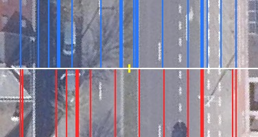
lex1 · Diestsevest (leuven)
bez pasportu: chodnik 2.6* · cyklostezka 1.5* · chodnik 1.4* · parkovani 2 · pruh 4.18 · pruh 2.88 · zelen 1.9* · plocha 0.45* · pruh 3.75 · pruh 3.75 · parkovani 2 · chodnik 0.75* · cyklostezka 2* · chodnik 2.25*
s pasportem: nezname 0.3* · chodnik_kola 4.93 · stromorad 1.5 · chodnik_kola 1.47 · parkovani 2 · pruh 3.56 · pruh 3.56 · pruh 3.56 · pruh 3.56 · parkovani 2 · chodnik_kola 4.5 · nezname 0.45*
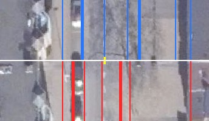
lex2 · Tessenstraat - Fonteinstraat (leuven)
bez pasportu: chodnik 3.2* · pruh 3.78 · pruh 3.77 · krajnice 1.85* · chodnik 6* · plocha 2.5*
s pasportem: chodnik 1.75 · parkovani 1.85 · pruh 2.97 · pruh 2.97 · stromorad 1.6 · chodnik 9.95
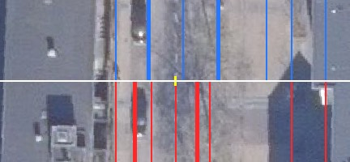
lex3 · Tessenstraat - Fonteinstraat (leuven)
bez pasportu: chodnik 3.95* · pruh 4.3 · pruh 4.3 · chodnik 6* · plocha 3.1* · zelen 4.2*
s pasportem: chodnik 2.25 · parkovani 2.17 · pruh 3 · pruh 2.52 · stromorad 1.61 · chodnik 10.09 · zelen 4.2*
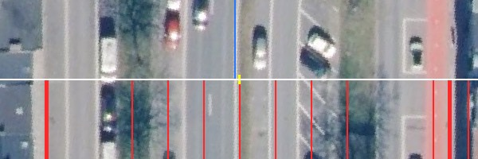
mex2 · Koningin Astridlaan (mechelen)
bez pasportu:
s pasportem: krajnice 10.78* · pruh 4.5 · pruh 4.5 · pruh 4.5 · pruh 4.5 · pruh 4.5 · pruh 4.5 · krajnice 10.78* · parkovani 2* · chodnik 2.45
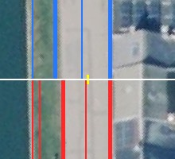
mex3 · Hanswijkvaart (mechelen)
bez pasportu: zelen 2.8* · pruh 3.45 · pruh 3.45
s pasportem: nezname 0.95* · chodnik 2.85 · pruh 2.95 · pruh 2.95